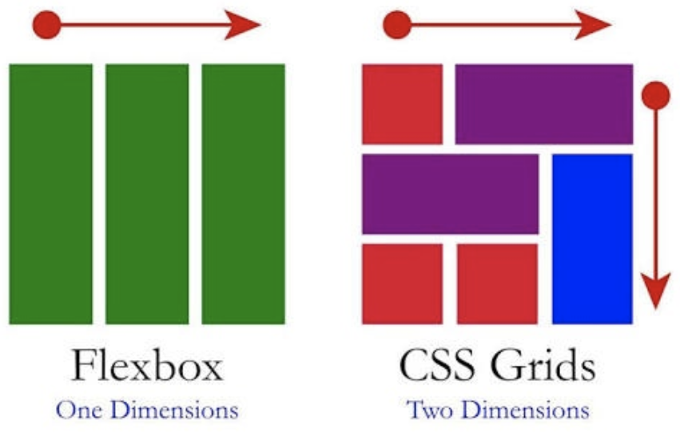

CSS Grid
CSS Grid
Etiquetas semánticas, CSS Grid
Etiquetas semánticas, CSS Grid

Propósito del Sitio
El propósito del sitio es dinamizar y facilitar el aprendizaje del tema del manejo de CCS Grid su semántica y manera de usarlo. Esto debido a la gran relevancia de esta tecnología en nuestros días
CSS Grid con respecto a FlexBox
Para iniciar primero debemos aclarar que los sistemas de Flexbox y CSS Grid no compiten entre sí, más bien se utilizan para solucionar problemas distintos, por lo que ninguno reemplaza al otro, y es importante conocer ambos para sacar el mayor provecho de cada uno. Esto se debe a que CSS Grid Layout ha sido diseñado para trabajar junto con otros elementos de CSS, como parte de un sistema completo para hacer que el diseño sea lo más fiel a nuestra idea de lo que estemos construyendo.
Ahora bien con esto en mente tenemos que la principal diferencia entre CSS Grid Layout y CSS Flexbox Layout es que Flexbox se creó para diseños de una dimensión,es decir, en una fila o una columna, ,mientras que CSS Grid Layout se pensó para el diseño bidimensional, es decir, en varias filas y columnas al mismo tiempo.
Esto ocurre porque Grid funciona desde el layout hacia adentro, es decir, que cuando usas CSS Grid Layout creas un diseño y luego colocas elementos en él, o permites que las reglas de auto-placement coloquen los elementos en las celdas de la cuadrícula de acuerdo con esa cuadrícula estricta. Aunque existe la posibilidad de crear pistas que respondan al tamaño del contenido, sin embargo, esto también cambiará toda la pista; Mientras que cuando usas flexbox estás deshabilitando parte de la flexibilidad, y probablemente necesites usar CSS Grid Layout como paso extra para poder obtener el resultado que deseas.
Un ejemplo de esto sería cuando estás configurando un ancho de porcentaje en un flex-item para alinearlo con otros ítems de una línea anterior. Por lo cual nn ese caso, es probable que Grid sea una mejor opción y así ahorrar tiempo y líneas de código.
códigofacilito.(S.F).Curso a fondo de CSS. Obtenido de https://codigofacilito.com/articulos/que-es-css-grid
mdnwebdocs_.(2022).Relación de Grid Layout con otros métodos de diseño y posicionamiento-CSS. Obtenido de https://developer.mozilla.org/es/docs/Web/CSS/CSS_Grid_Layout/Relationship_of_Grid_Layout#:~:text=La%20diferencia%20b%C3%A1sica%20entre%20CSS,y%20columnas%20al%20mismo%20tiempo.

German, C.(2020).SOMOSPNT.CSS Grid vs Flexbox vs Bootstrap. Obtenido de https://somospnt.com/blog/152-css-grid-vs-flexbox-vs-bootstrap
Correo: castromejia7@gmail.com // Skype:live:josue_m0807 // Fecha:Septiembre 2022
Correo: castromejia7@gmail.com // Skype:live:josue_m0807 // Fecha:Septiembre 2022